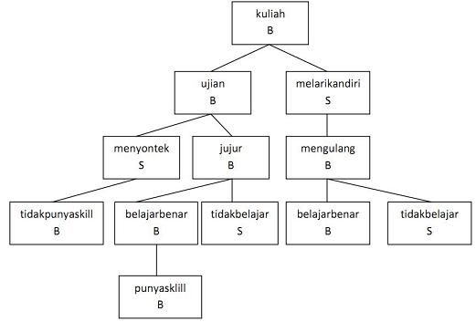

|
|
(phnbbs13) Pohon Biner Benar Salah
Pembuat Soal: Rosa A. S.
| Batas Waktu Eksekusi |
5 Detik |
| Batas Memori |
1 MB |
Diberikan elemen pohon biner berupa string langkah dan sebuah karakter yang berisi B yang artinya benar dan S yang artinya salah. Jika diminta hanya ditampilkan B maka tampilkan semua simpul dari yang pertama kali B hingga yang terakhir B, begitu juga dengan salah maka tampilkan yang pertama kali salah hingga terakhir salah.

Format Masukan:
n, 0 < n < 50, banyaknya simpul yang dimasukkan ke pohon
n baris simpul pohon, setiap simpul terdiri dari simpul orang tua, nama simpul, B atau S
B atau S sebagai pohon yang ditampilkan
Format Keluaran:
pohon B atau S yang harus ditampilkan
Contoh Masukan
12
null kuliah B
kuliah ujian B
kuliah melarikandiri S
ujian menyontek S
ujian jujur B
menyontek tidakpunyaskill B
jujur belajarbenar B
jujur tidakbelajar S
belajarbenar punyaskill B
melarikandiri mengulang B
mengulang belajarbenar B
mengulang tidakbelajar S
B
|
Contoh Keluaran
kuliah
ujian
jujur
belajarbenar
punyaskill
|
|